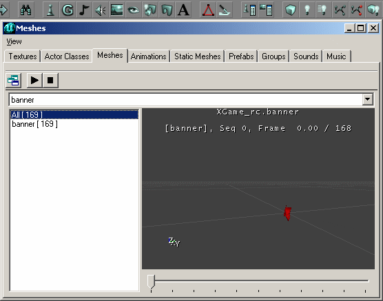

Mesh Browser
The Mesh Browser is one of several Resource Browsers in the UnrealEd Interface. By default it is docked in the Master Browser.
Uses of the browser:
- displays currently loaded non-skeletal meshes (skeletal meshes can be viewed in the Animation Browser)

Mesh Browser |
Opening
The Static Mesh Browser is accessed either of two ways:
- Do UnrealEd Main Menu → View → Mesh Browser
- Press the Mesh Browser button in the middle of the toolbar at the top of the Editor window. It looks like an eye.
Browser Toolbar Buttons
The Static Mesh Browser has the following buttons (from left to right) in its toolbar:
- Dock / undock from browser window
- Play Animation
- Stop Animation
Using the Mesh Browser to preview reskinned meshes
One very useful function of the Mesh Browser for coders is its ability to display the meshes with modifications to skins, drawstyle, etc. because you don't have to place an actor in the level and modify it.
- Select a mesh from the list
- Right-click on the mesh in the window and select Actor Properties to bring up the Camera Properties window
- Open the Display group in the Camera Properties window and start messing around with the options
Navigation
<< Main UnrealEd Interface
< Previous Texture Browser | Prefab Browser Next >